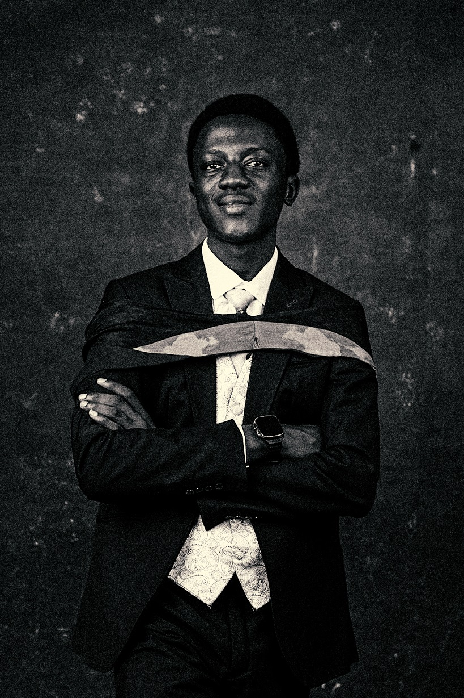

I design brands and digital experiences that make ideas clear, meaningful, and memorable.
I'm Ibrahim Yebo Goshie, a multidisciplinary designer creating thoughtful brand identities and intuitive digital experiences for startups, businesses, and growing brands.
Tools and capabilities
Ideas become meaningful when they're designed with purpose.
Ideas become meaningful when they're designed with purpose.
From visual identities to digital experiences, I work across strategy, design, and execution to turn ideas into clear and engaging experiences.
I design with curiosity, intention, and a strong attention to detail.
I'm Ibrahim Yebo Goshie, a Brand & Product Designer based in Nigeria. My work sits at the intersection of visual identity, digital experiences, and user-centered design. I enjoy taking complex ideas and turning them into simple, purposeful, and visually engaging experiences.
My background across design, technology, and engineering influences the way I approach problems. I don't just think about how something looks — I think about how it works, who it's for, and how it communicates.
Design meets technology.
My background in engineering and technology gives me another way to approach design problems — combining creativity with structure, logic, systems thinking, and curiosity.
What I bring to the table.
Core Skills
Tools
I approach every project with curiosity, structure, and a focus on creating meaningful impact.
B.Eng. in Electrical & Electronics Engineering

Let's turn your idea into something people remember.
Whether you're building a new brand, improving a digital product, or exploring an idea, I'd love to hear what you're working on.